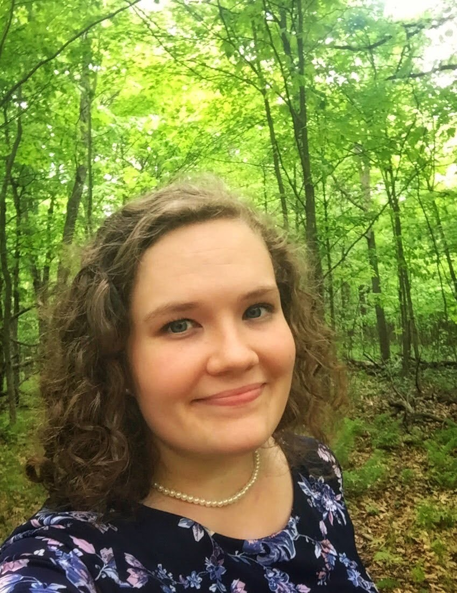
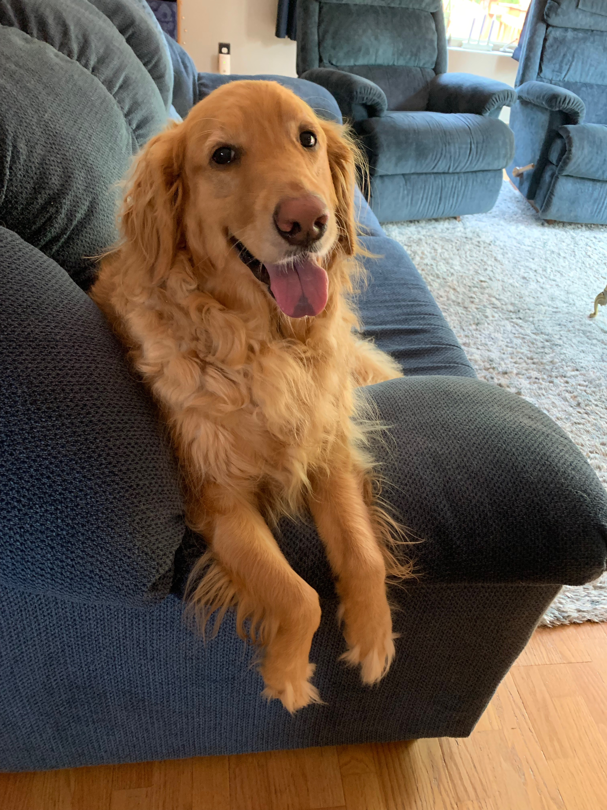
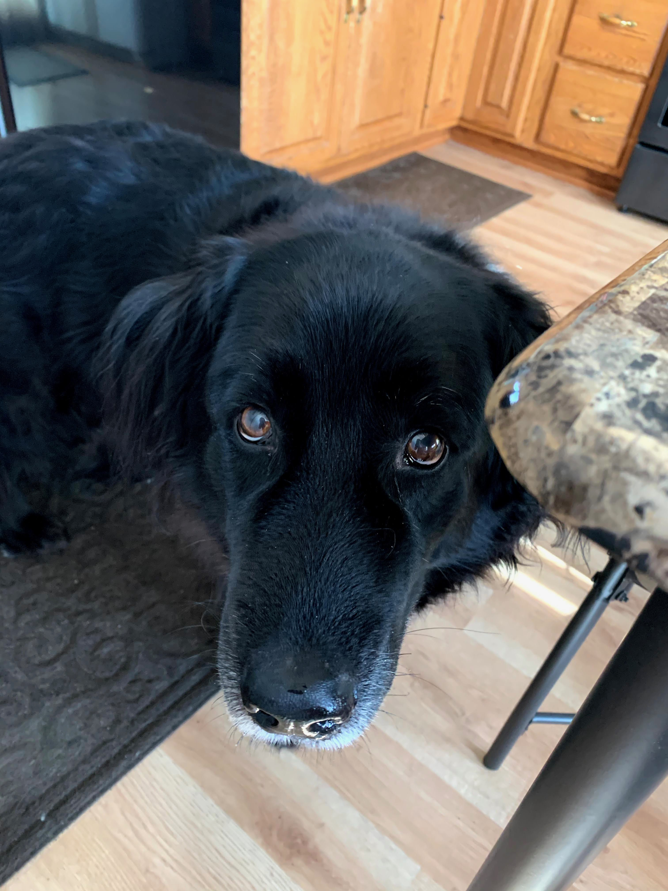

Hi there, I'm Bianca (pronounced "bee-yank-uh" ), but you can call me Bee!

I originally hail from Northern Minnesota, but in June 2020, I relocated to the Bay Area of California. I don't miss the extreme winters of "the Northland," but I still head back there regularly to visit my family and friends and get my fill of these cute floofs, Daisy and Dolly.


Daisy and Dolly are two very good girls with very different personalities. Click each picture to give them a 'boop' and find out how they react.
Education
I graduated from the College of St. Scholastica in May 2016, earning a Bachelor of Arts in Psychology and Vocal Performance. During my time as a student, aside from being involved in about ten different music ensembles (choral and band - I play the oboe, too!) simultaneously, I completed a few projects that I'm particularly proud of:
My research partner and I collaborated to complete a correlational study to learn more about music as a tool for stress reduction, exploring how listeners' musical taste and listening goals related to their perceived stress relief.
I performed two vocal recitals -- one during the fall of my junior year, the other during the spring of my senior year - which included putting together the repertoire for the program, researching and writing the program notes, promoting the event, and memorization - lots and lots of memorization. Here's a sample from my senior recital.
Professional Experience
One other thing I'm particularly proud of from my time as a CSS student is my work with The College's disability resources office, The Center for Equal Access. My freshman gig as a voluntary note-taker for one of my classes turned into a full-fledged work-study role with a wide variety of responsibilities. Some of the tasks I performed regularly as an Access Assistant included:
Proctoring exams in our low-distraction Testing Center
Serving as a sighted guide for a student with a visual disability
Auditing course materials for accessibility
Helping students learn how to use their assistive technology (including developing written and video tutorials)
After I graduated, I continued my work with the Center for Equal Access as a professional staff member -- first as the office's Administrative Specialist and Testing Center Coordinator, then as an Access Specialist in charge of determining accommodations for undergraduate students with disabilities.
One thing that I became keenly aware of while working with the Center for Equal Access is how inaccessible technology can be for students with disabilities. My colleagues and I frequently had to devise workarounds to help our students navigate websites, documents, and applications that were not designed with accessibility in mind. It turns out that it's much easier to make something accessible from the start than to try to retrofit it after the fact.
Technology Experience
HTML
I developed a very rudimentary understanding of HTML while managing the Center for Equal Access's webpage. The content management system we used at the time wasn't very user-friendly and would frequently mess with the formatting we input, particularly when it came to headings. Knowing just how crucial that heading structure is for screen reader users, I dove in to try and make sense of the source code. Through trial, error, and a lot of Googling, I was able to weed out the bugs and update the code to ensure not only that the headings were structured correctly underneath for screen readers, but that the formatting would look consistent to sighted users, too.
Data Analysis (SQL, R)
During my most recent role as the Senior Administrative Assistant for Santa Clara University's Equal Opportunity and Title IX office, it became clear to me that I would benefit from leveling up my data skills, as a big part of my job involved creating reports. Even as the purported 'Spreadsheet Queen' among my colleagues, I knew I would need to brush up on my Excel knowledge to be effective. However, that led me down a rabbit hole to learn even more about data analysis, and I ended up enrolling in the Google Data Analytics Certificate program via Coursera, which I graduated from in July 2022. That program, paired with some other self-study through DataCamp, gave me foundational knowledge of R (with exposure to dplyr, tidyverse, and ggplot2) and intermediate knowledge of SQL (I’m comfortable with updating tables, performing joins, subqueries, partitions, and common table expressions).
As part of the program, I completed a capstone project, conducting an exploratory analysis identifying differences between the user groups that interact with a company’s platform and making recommendations to help their marketing team tailor their next campaign. I even ended up creating a data analyst portfolio website using a template. Little did I know that I would be coming back a few months later to create another personal website, this time from scratch!
Python
R and SQL weren't enough for me. I knew a lot of jobs in the tech industry were looking for Python skills, and I had always wanted to learn anyway, so I enrolled in Dr. Angela Yu's 100 Days of Code Complete Python Pro Bootcamp on Udemy. So far, I've really enjoyed the project-based approach to learning— it's reminded me how fulfilling it is to create things, even simple games like this choose-your-own-adventure game or hangman. It led me to reflect on what I want to do next in my career, and this is what led me to Flatiron School.
Bootcamp and Beyond
I'm looking to make a change in my career that will lead me to more satisfying work. Of the work I’ve done over my last nine years in the workforce, I’ve always excelled and been energized by any opportunity to 1) use creative thinking and 2) exercise my analytical, technical, and problem-solving muscles. Software engineering is a sector that would allow me to embrace these skills daily. Learning how to code has been a challenging but extremely fulfilling experience so far, and I’m ready to dive in even deeper. While I’ve enjoyed self-studying up to this point, I’m finding it’s not the most efficient way for me to learn – I would benefit from having the structure, community, and career resources that come with a bootcamp. With that, I'm looking forward to getting started with my full-time Software Engineering Immersive program with Flatiron School in January 2023 and getting to meet everyone I'll be working with in my cohort. To new adventures!